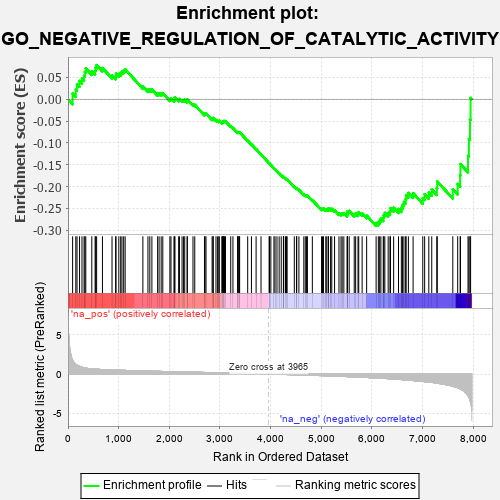

| | | Dataset | 7d |
| Phenotype | NoPhenotypeAvailable |
| Upregulated in class | na_neg |
| GeneSet | GO_NEGATIVE_REGULATION_OF_CATALYTIC_ACTIVITY |
| Enrichment Score (ES) | -0.290171 |
| Normalized Enrichment Score (NES) | -0.9579225 |
| Nominal p-value | 0.5717368 |
| FDR q-value | 0.9039073 |
| FWER p-Value | 1.0 |
Table: GSEA Results Summary

Fig 1: Enrichment plot: GO_NEGATIVE_REGULATION_OF_CATALYTIC_ACTIVITY
Profile of the Running ES Score & Positions of GeneSet Members on the Rank Ordered List
| PROBE | GENE SYMBOL | GENE_TITLE | RANK IN GENE LIST | RANK METRIC SCORE | RUNNING ES | CORE ENRICHMENT | | 1 | WFDC8 | | | 91 | 1.777 | 0.0129 | No |
| 2 | MTRR | | | 154 | 1.217 | 0.0219 | No |
| 3 | PZP | | | 178 | 1.129 | 0.0345 | No |
| 4 | RHOH | | | 228 | 0.987 | 0.0419 | No |
| 5 | HGF | | | 276 | 0.870 | 0.0480 | No |
| 6 | CNST | | | 317 | 0.792 | 0.0538 | No |
| 7 | WEE2 | | | 333 | 0.766 | 0.0625 | No |
| 8 | GSK3A | | | 351 | 0.745 | 0.0706 | No |
| 9 | LRP1 | | | 470 | 0.648 | 0.0645 | No |
| 10 | PKN1 | | | 535 | 0.619 | 0.0649 | No |
| 11 | MCM2 | | | 546 | 0.614 | 0.0721 | No |
| 12 | NLE1 | | | 565 | 0.609 | 0.0782 | No |
| 13 | FAF2 | | | 680 | 0.566 | 0.0715 | No |
| 14 | IGBP1 | | | 869 | 0.514 | 0.0545 | No |
| 15 | PDCD4 | | | 941 | 0.497 | 0.0523 | No |
| 16 | PTPA | | | 947 | 0.497 | 0.0586 | No |
| 17 | MEN1 | | | 1003 | 0.483 | 0.0582 | No |
| 18 | AKT1 | | | 1040 | 0.476 | 0.0602 | No |
| 19 | FZD10 | | | 1065 | 0.470 | 0.0636 | No |
| 20 | MYO1D | | | 1099 | 0.464 | 0.0658 | No |
| 21 | SRC | | | 1128 | 0.459 | 0.0686 | No |
| 22 | TIMP2 | | | 1478 | 0.394 | 0.0294 | No |
| 23 | PTPRT | | | 1578 | 0.378 | 0.0220 | No |
| 24 | BIRC8 | | | 1615 | 0.372 | 0.0225 | No |
| 25 | CSN2 | | | 1656 | 0.363 | 0.0224 | No |
| 26 | LRP5 | | | 1769 | 0.342 | 0.0128 | No |
| 27 | FNIP1 | | | 1798 | 0.338 | 0.0139 | No |
| 28 | PTPRQ | | | 1839 | 0.330 | 0.0134 | No |
| 29 | NUP62 | | | 1871 | 0.324 | 0.0139 | No |
| 30 | RAF1 | | | 2011 | 0.303 | 0.0003 | No |
| 31 | VPS25 | | | 2033 | 0.300 | 0.0018 | No |
| 32 | TAF7 | | | 2092 | 0.292 | -0.0016 | No |
| 33 | BMP7 | | | 2107 | 0.290 | 0.0006 | No |
| 34 | GMIP | | | 2108 | 0.290 | 0.0046 | No |
| 35 | NPRL2 | | | 2184 | 0.278 | -0.0011 | No |
| 36 | TIPRL | | | 2200 | 0.277 | 0.0008 | No |
| 37 | PSMF1 | | | 2251 | 0.268 | -0.0019 | No |
| 38 | AIP | | | 2281 | 0.263 | -0.0019 | No |
| 39 | GSKIP | | | 2304 | 0.259 | -0.0012 | No |
| 40 | BCAS3 | | | 2352 | 0.253 | -0.0037 | No |
| 41 | OXA1L | | | 2355 | 0.252 | -0.0004 | No |
| 42 | UBXN1 | | | 2467 | 0.232 | -0.0114 | No |
| 43 | KAT2B | | | 2502 | 0.226 | -0.0127 | No |
| 44 | ZGPAT | | | 2694 | 0.200 | -0.0343 | No |
| 45 | MARF1 | | | 2704 | 0.198 | -0.0327 | No |
| 46 | SLIT2 | | | 2724 | 0.195 | -0.0325 | No |
| 47 | CAND1 | | | 2845 | 0.177 | -0.0453 | No |
| 48 | UCHL5 | | | 2864 | 0.172 | -0.0453 | No |
| 49 | WDTC1 | | | 2865 | 0.172 | -0.0429 | No |
| 50 | ELL | | | 2921 | 0.163 | -0.0477 | No |
| 51 | SOCS4 | | | 2953 | 0.157 | -0.0495 | No |
| 52 | RNH1 | | | 2977 | 0.153 | -0.0503 | No |
| 53 | RRP1B | | | 2986 | 0.152 | -0.0492 | No |
| 54 | LEF1 | | | 3037 | 0.144 | -0.0536 | No |
| 55 | BIRC6 | | | 3047 | 0.143 | -0.0528 | No |
| 56 | ABCE1 | | | 3051 | 0.143 | -0.0512 | No |
| 57 | PROS1 | | | 3070 | 0.141 | -0.0515 | No |
| 58 | MAP2 | | | 3074 | 0.140 | -0.0500 | No |
| 59 | CHP1 | | | 3089 | 0.138 | -0.0499 | No |
| 60 | GPX1 | | | 3109 | 0.135 | -0.0504 | No |
| 61 | NOSIP | | | 3212 | 0.121 | -0.0618 | No |
| 62 | COX11 | | | 3256 | 0.113 | -0.0657 | No |
| 63 | UBE2O | | | 3348 | 0.097 | -0.0760 | No |
| 64 | TAB1 | | | 3351 | 0.097 | -0.0749 | No |
| 65 | SMAD7 | | | 3369 | 0.093 | -0.0758 | No |
| 66 | GMFB | | | 3381 | 0.091 | -0.0760 | No |
| 67 | DDX3X | | | 3388 | 0.091 | -0.0755 | No |
| 68 | PRDX5 | | | 3547 | 0.068 | -0.0947 | No |
| 69 | CBL | | | 3621 | 0.056 | -0.1033 | No |
| 70 | NF1 | | | 3713 | 0.040 | -0.1144 | No |
| 71 | SFI1 | | | 3810 | 0.026 | -0.1263 | No |
| 72 | IGF1R | | | 3970 | -0.002 | -0.1466 | No |
| 73 | CHMP6 | | | 3977 | -0.003 | -0.1473 | No |
| 74 | PCIF1 | | | 4004 | -0.009 | -0.1505 | No |
| 75 | SFRP2 | | | 4065 | -0.018 | -0.1579 | No |
| 76 | FICD | | | 4087 | -0.022 | -0.1603 | No |
| 77 | ABL1 | | | 4125 | -0.027 | -0.1647 | No |
| 78 | GFI1 | | | 4168 | -0.037 | -0.1695 | No |
| 79 | TIMP1 | | | 4209 | -0.043 | -0.1741 | No |
| 80 | RPTOR | | | 4252 | -0.050 | -0.1787 | No |
| 81 | ARL2 | | | 4254 | -0.050 | -0.1782 | No |
| 82 | PCID2 | | | 4258 | -0.051 | -0.1779 | No |
| 83 | RGS3 | | | 4293 | -0.059 | -0.1814 | No |
| 84 | BAG4 | | | 4314 | -0.061 | -0.1831 | No |
| 85 | CD109 | | | 4325 | -0.064 | -0.1835 | No |
| 86 | LRRK2 | | | 4467 | -0.087 | -0.2003 | No |
| 87 | ILK | | | 4510 | -0.096 | -0.2043 | No |
| 88 | PINX1 | | | 4515 | -0.097 | -0.2035 | No |
| 89 | APC | | | 4558 | -0.107 | -0.2074 | No |
| 90 | PPME1 | | | 4655 | -0.129 | -0.2179 | No |
| 91 | LIMK1 | | | 4684 | -0.136 | -0.2196 | No |
| 92 | CPEB2 | | | 4709 | -0.141 | -0.2207 | No |
| 93 | PXK | | | 4726 | -0.144 | -0.2208 | No |
| 94 | TAOK3 | | | 4823 | -0.162 | -0.2308 | No |
| 95 | KLF4 | | | 5005 | -0.198 | -0.2512 | No |
| 96 | WDR81 | | | 5024 | -0.203 | -0.2507 | No |
| 97 | PDPK1 | | | 5043 | -0.207 | -0.2501 | No |
| 98 | DRD2 | | | 5088 | -0.221 | -0.2527 | No |
| 99 | MMP9 | | | 5108 | -0.227 | -0.2520 | No |
| 100 | UBE2Z | | | 5137 | -0.234 | -0.2523 | No |
| 101 | IPO7 | | | 5142 | -0.236 | -0.2496 | No |
| 102 | HDAC6 | | | 5183 | -0.244 | -0.2513 | No |
| 103 | IPO5 | | | 5207 | -0.248 | -0.2508 | No |
| 104 | PTEN | | | 5262 | -0.261 | -0.2541 | No |
| 105 | EPHA1 | | | 5349 | -0.285 | -0.2612 | No |
| 106 | PRDX3 | | | 5389 | -0.293 | -0.2621 | No |
| 107 | LATS1 | | | 5412 | -0.298 | -0.2608 | No |
| 108 | CBLB | | | 5445 | -0.306 | -0.2606 | No |
| 109 | FABP4 | | | 5509 | -0.322 | -0.2642 | No |
| 110 | TFPI2 | | | 5516 | -0.324 | -0.2605 | No |
| 111 | CERS1 | | | 5518 | -0.325 | -0.2561 | No |
| 112 | PDE6D | | | 5551 | -0.333 | -0.2556 | No |
| 113 | WNK1 | | | 5650 | -0.362 | -0.2631 | No |
| 114 | CASP8 | | | 5678 | -0.369 | -0.2615 | No |
| 115 | DGKI | | | 5725 | -0.384 | -0.2620 | No |
| 116 | ENSA | | | 5739 | -0.388 | -0.2583 | No |
| 117 | BBS4 | | | 5806 | -0.407 | -0.2611 | No |
| 118 | SET | | | 5895 | -0.434 | -0.2664 | No |
| 119 | PLK1 | | | 6082 | -0.500 | -0.2833 | Yes |
| 120 | DLG2 | | | 6126 | -0.513 | -0.2817 | Yes |
| 121 | ROCK1 | | | 6152 | -0.520 | -0.2777 | Yes |
| 122 | RAG1 | | | 6176 | -0.530 | -0.2733 | Yes |
| 123 | MVP | | | 6223 | -0.543 | -0.2716 | Yes |
| 124 | RGN | | | 6233 | -0.547 | -0.2652 | Yes |
| 125 | TFAP4 | | | 6254 | -0.556 | -0.2601 | Yes |
| 126 | BOD1 | | | 6320 | -0.583 | -0.2603 | Yes |
| 127 | GALR2 | | | 6355 | -0.599 | -0.2564 | Yes |
| 128 | BIRC3 | | | 6366 | -0.603 | -0.2493 | Yes |
| 129 | CSK | | | 6428 | -0.630 | -0.2484 | Yes |
| 130 | PLIN5 | | | 6524 | -0.672 | -0.2512 | Yes |
| 131 | CLN3 | | | 6580 | -0.699 | -0.2486 | Yes |
| 132 | PIF1 | | | 6604 | -0.713 | -0.2417 | Yes |
| 133 | WWTR1 | | | 6631 | -0.729 | -0.2349 | Yes |
| 134 | TMED2 | | | 6665 | -0.746 | -0.2288 | Yes |
| 135 | RFFL | | | 6674 | -0.749 | -0.2195 | Yes |
| 136 | GSK3B | | | 6719 | -0.768 | -0.2145 | Yes |
| 137 | PAQR3 | | | 6812 | -0.819 | -0.2149 | Yes |
| 138 | CCR2 | | | 7003 | -0.939 | -0.2262 | Yes |
| 139 | RNF34 | | | 7040 | -0.963 | -0.2175 | Yes |
| 140 | PTPRB | | | 7122 | -1.010 | -0.2139 | Yes |
| 141 | PTPRJ | | | 7180 | -1.054 | -0.2066 | Yes |
| 142 | CIB1 | | | 7280 | -1.152 | -0.2033 | Yes |
| 143 | PARP3 | | | 7289 | -1.158 | -0.1883 | Yes |
| 144 | GRM2 | | | 7596 | -1.547 | -0.2060 | Yes |
| 145 | CST1 | | | 7692 | -1.746 | -0.1940 | Yes |
| 146 | GRM3 | | | 7741 | -1.880 | -0.1741 | Yes |
| 147 | CASP3 | | | 7747 | -1.902 | -0.1484 | Yes |
| 148 | CAV3 | | | 7896 | -2.739 | -0.1294 | Yes |
| 149 | PI16 | | | 7914 | -2.948 | -0.0908 | Yes |
| 150 | ARRB1 | | | 7935 | -3.377 | -0.0467 | Yes |
| 151 | XIAP | | | 7947 | -3.696 | 0.0031 | Yes |
Table: GSEA details [plain text format]
 Fig 2: GO_NEGATIVE_REGULATION_OF_CATALYTIC_ACTIVITY: Random ES distribution
Fig 2: GO_NEGATIVE_REGULATION_OF_CATALYTIC_ACTIVITY: Random ES distribution
Gene set null distribution of ES for GO_NEGATIVE_REGULATION_OF_CATALYTIC_ACTIVITY